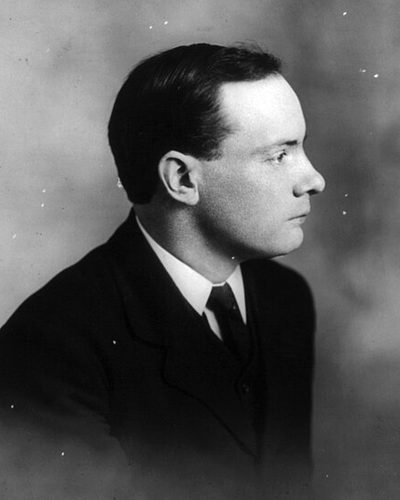

Ideologies / Nationalist
What is Irish Republicanism?
Irish Republicanism is a political ideology in the Nationalist family. Read by Pearse at the start of the Easter Rising, the proclamation declares Ireland a sovereign independent state and asserts the right of the Irish people to the ownership of Ireland. It claims that right has been affirmed in arms by every generation. The republic promises religious and civil liberty, equal rights and opportunities for all citizens, and a government elected by the votes of all its men and women.
A sovereign republic, won in arms, for all the people of Ireland.
Defined from: Provisional Government of the Irish Republic, Proclamation of the Irish Republic (1916)
See how close you are to Irish Republicanism Dare a friend to answer as one


Where Irish Republicanism stands on 13 axes
Each axis runs from 0 to 100. A score of 50 is the middle. On a classic compass it sits in the Libertarian Right quadrant.
| Axis | Position | Score | In words |
|---|---|---|---|
| EconomyMarket to Planned | 45 | Balanced | |
| OwnershipPrivate to Collective | 45 | Balanced | |
| RightsLiberty to Security | 35 | Leans Liberty | |
| GovernmentDemocracy to Autocracy | 10 | Very strongly Democracy | |
| StructureDecentralised to Centralised | 55 | Balanced | |
| NationInternationalist to Nationalist | 90 | Very strongly Nationalist | |
| ImmigrationMulticulturalist to Assimilationist | 60 | Leans Assimilationist | |
| ValuesProgressive to Traditional | 55 | Balanced | |
| TechnologyAccelerationist to Precautionary | 50 | Balanced | |
| EnvironmentIndustrialist to Environmentalist | 40 | Leans Industrialist | |
| ReligionSecular to Religious | 50 | Balanced | |
| MilitaryPacifist to Militarist | 75 | Strongly Militarist | |
| TradeFree Trade to Protectionist | 65 | Leans Protectionist |
Ideologies closest to Irish Republicanism
- Political Zionism88% alike
- Machiavellian Republicanism86% alike
- Mazzinian Republicanism85% alike
- Rousseauian Republicanism84% alike
- Gaullism82% alike
Its opposite on this map is Posadism, at 38%.
Parties near Irish Republicanism
- Sinn Féin of 1918Ireland. Sinn Féin Manifesto (1918)92% alike
- Universal Negro Improvement AssociationUnited States. Declaration of the Rights of the Negro Peoples of the World (1920)87% alike
- Young ItalyItaly. General Instructions for the Members of Young Italy (1831)86% alike
- Social Democratic PartyUnited Kingdom. Homecoming (2024)84% alike
Common questions
What is Irish Republicanism?
Irish Republicanism is a political ideology in the Nationalist family. Read by Pearse at the start of the Easter Rising, the proclamation declares Ireland a sovereign independent state and asserts the right of the Irish people to the ownership of Ireland. It claims that right has been affirmed in arms by every generation. The republic promises religious and civil liberty, equal rights and opportunities for all citizens, and a government elected by the votes of all its men and women.
What does Irish Republicanism believe?
In one line: A sovereign republic, won in arms, for all the people of Ireland. Its strongest positions are Democracy, Nationalist, Militarist. Read by Pearse at the start of the Easter Rising, the proclamation declares Ireland a sovereign independent state and asserts the right of the Irish people to the ownership of Ireland. It claims that right has been affirmed in arms by every generation. The republic promises religious and civil liberty, equal rights and opportunities for all citizens, and a government elected by the votes of all its men and women.
Who founded Irish Republicanism?
Irish Republicanism is defined here from Proclamation of the Irish Republic (1916) by Provisional Government of the Irish Republic. The thinker most tied to it is Patrick Pearse (1879 to 1916).
Is Irish Republicanism left wing or right wing?
On a classic two axis compass Irish Republicanism falls in the Libertarian Right quadrant, which means the economic centre and the libertarian side. Left and right hide a lot, though, which is why EthosScales scores it on thirteen separate axes.
How is Irish Republicanism different from Political Zionism?
They are close: 88% alike. The biggest gaps are on Technology, where Irish Republicanism scores 50 and Political Zionism scores 25, and Immigration, where Irish Republicanism scores 60 and Political Zionism scores 75. On each axis, 0 is one end and 100 is the other.
Think this is wrong? Suggest a correction. The scores are editorial estimates.